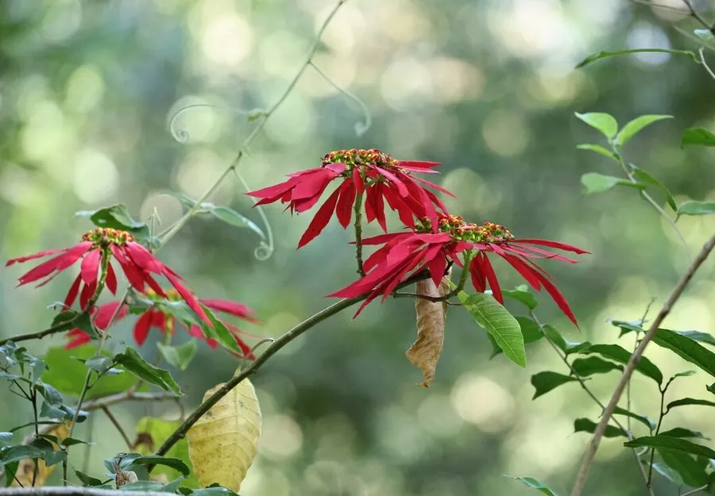

灌木与花木 · 植物界
一品红 Euphorbia pulcherrima

原产墨西哥的常绿灌木，冬春时节顶端的苞片变为鲜红色、形似花瓣，是圣诞节最著名的节庆装饰植物。
- 分类
- 门被子植物门纲木兰纲目金虎尾目科大戟科属大戟属
- 栖息环境
- 海拔 1500 米以下的热带亚热带地区，喜光喜温暖，不耐寒
- 地理分布
- 原产墨西哥及中美洲，中国各地广泛栽培，南方可露地种植
- 保护级别
- 暂无评估；中国未列入国家重点保护野生植物名录
物种志
一品红为常绿灌木，高可达 3 m，全株含白色乳汁；叶片互生，卵状椭圆形至披针形，绿色。花期 11 月至翌年 3 月，顶生杯状聚伞花序，花序下方有多枚苞片，在短日照条件下转为鲜红色，也有粉、白、黄等品种，苞片形似花瓣，是主要的观赏部位；真正的花小、黄绿色，生于苞片中央。蒴果成熟时开裂。
一品红原产墨西哥及中美洲，中国各地广泛栽培，喜光、喜温暖湿润，适宜疏松肥沃、排水良好的土壤，不耐寒，北方多作盆栽。因苞片鲜红、花期适逢圣诞与元旦，是西方圣诞节最重要的装饰植物，被称为“圣诞红”；中国南方可露地栽培作花坛与庭院布景。一品红的白色乳汁有毒，接触皮肤可能引起过敏，误食会引起呕吐，栽培与观赏时需注意，尤其要避免儿童误食。
形态与习性
- 株高可达 3 m，全株含白色乳汁
- 花期11 月至翌年 3 月，苞片变红
- 果期栽培条件下少见结实
- 光照短日照促进苞片变色
- 水分喜湿润，怕积水
- 土壤疏松肥沃、排水良好的壤土
- 主要用途圣诞节庆装饰、庭院与花坛布景、盆栽
趣味知识
- 一品红鲜红似花瓣的部分其实是苞片，真正的花很小，藏在苞片中央。
- 一品红需要短日照才能让苞片变红，因此多在秋冬季上市。
- 一品红是西方圣诞节最重要的装饰植物，因此被称为“圣诞红”。
- 一品红的白色乳汁有毒，误食会引起呕吐，观赏时需避免儿童接触。